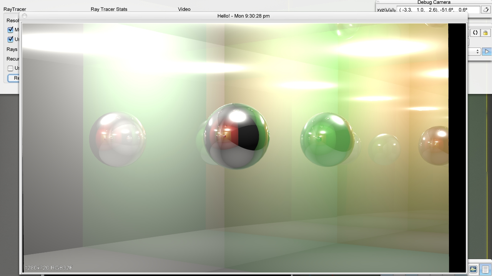
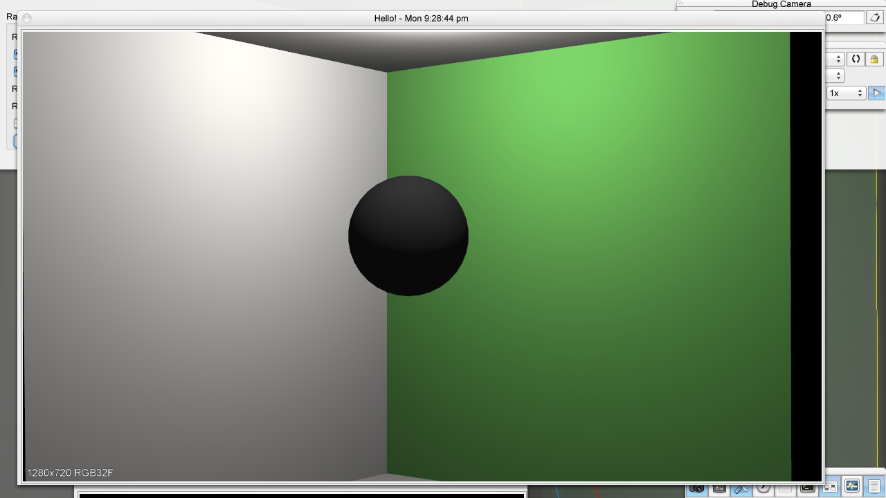
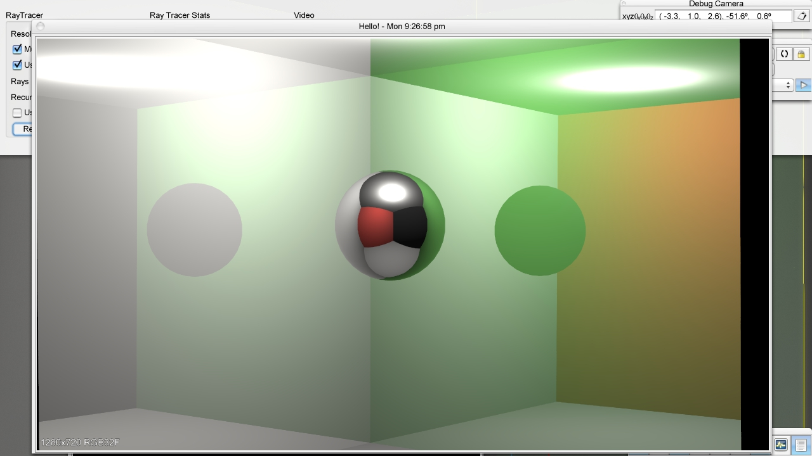
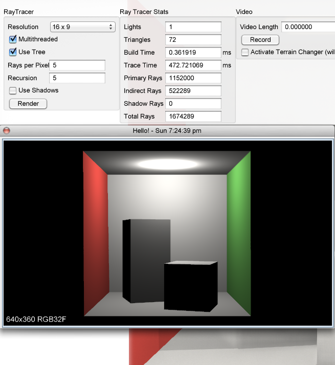
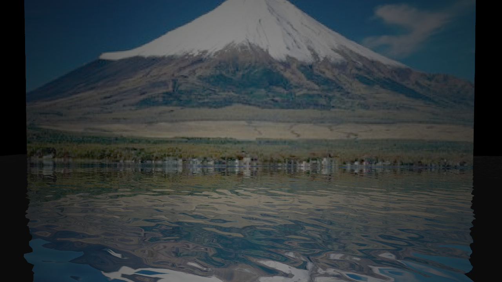
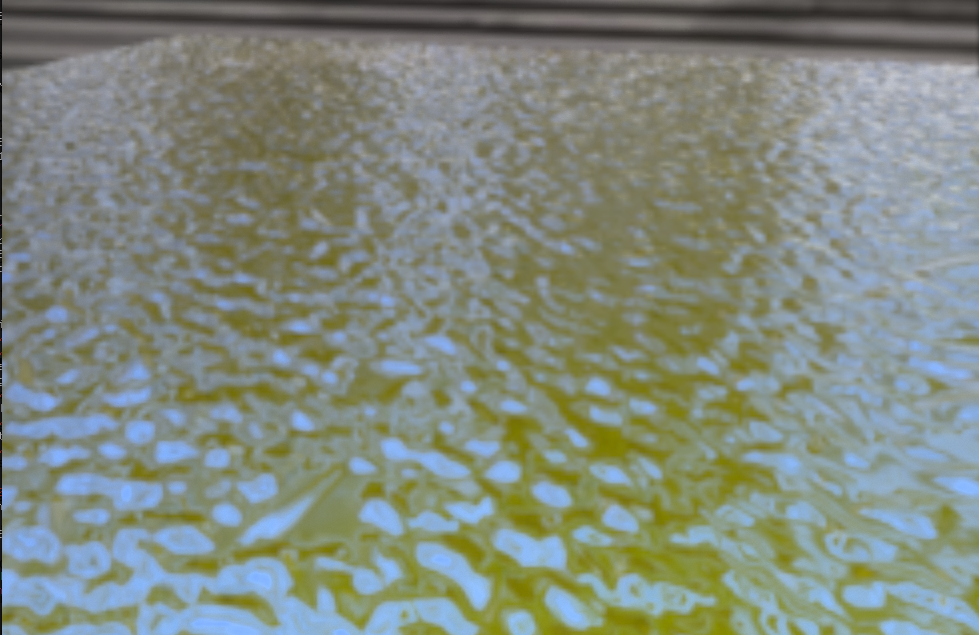
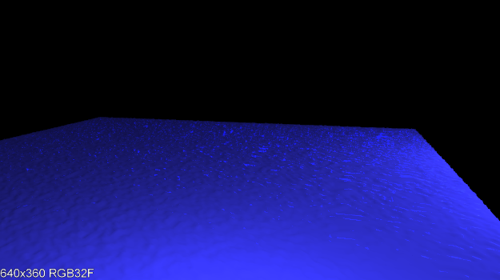
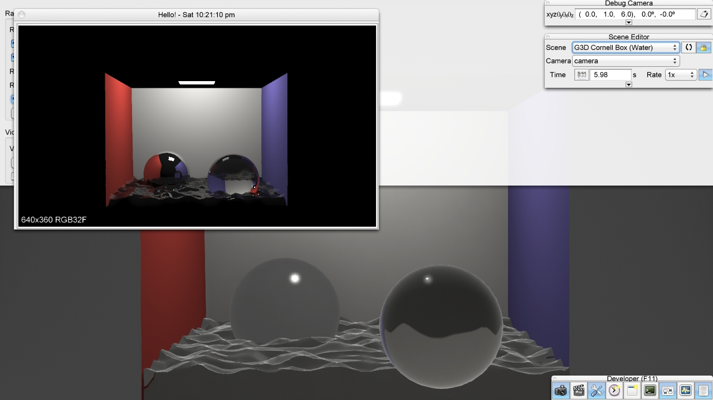
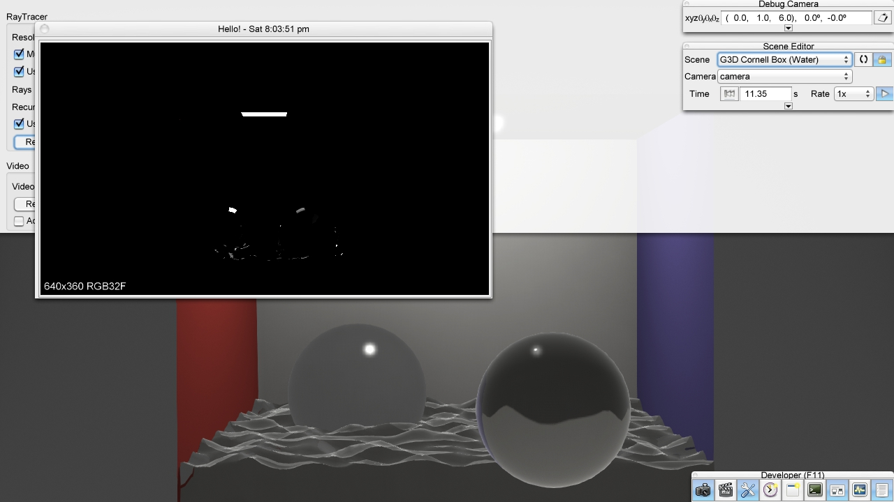
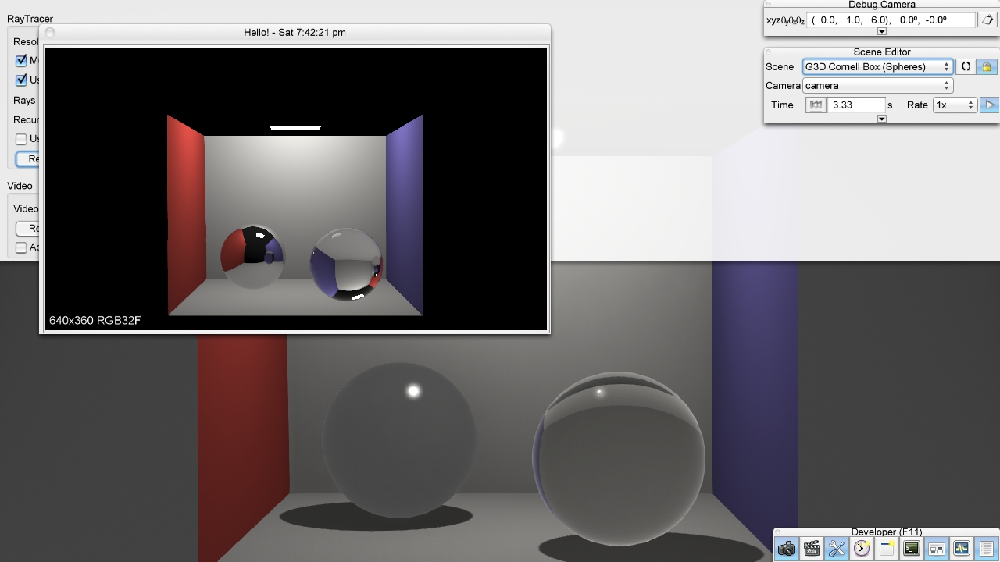

|
Recursive Rays: Mattisa
Kyle,Kelly,Diwas
|
All we had left today was to put the finishing touches on our program and our rendered images. After cleaning and commenting the code we are finished.
We have finished our first result for the Mirror Box. We went into the .obj files for the Cornell Box and the reflective sphere and altered them so that the walls of the Cornell Box and the sphere were reflective. We resized the sphere and moved it to the corner of the Cornell Box to get the same angle as the image in the lab handout, and so that we could see more evidence of the backward bounces of the ball in the reflective walls of the Cornell Box.
|  |
| Mirror Box 7 Bounces |
|  |
| Mirror Box 1 Bounces |
|  |
| Mirror Box 2 Bounces |
Finally figured out how to update the GUIs. I have been puzzling over where I should update the indirectRayCount and shadowRayCount, whether it should be saved as a member variable of Stats or as a ashared ptr in render(). The problem was that the L_scatteredDirect and L_SpecularInDirect were const functions and so we could not update the ray counts for each call to render(). I've made the ray counts 'mutable' now and it works. It also turned out that the shared pointers were unnecessary as I could simply use integers to store the values of each ray count.
|  |
| Without Shadows shadow ray count = 0 |
 |
| With one level of recursion indirect ray count = 0 |
 |
| With multiple levels and with shadows ray counts > 0 |
9:58pm - Finally we have some results for the report. Added a custom scene with a spotlight, singleLightCornellBox, I'm using an adapted version of the Feature Test for Emissive, the singleLightCornell Box for a demonstration of shadows, and finally SimpleCornellBox-mirror for impulses. Kyle is working on generating the custom scene with a heightfield that looks like water, Diwas is figuring out how to make the Mirror Box with the backward bounces.
11:30pm - Working on a custom Cornell Box scene with reflections, shadows, and a specularly reflective object. Using the mirror box model .obj file that Diwas extracted, I am trying to recreate the scene from the lab handout but for some reason, the scene renders as completely black when UseShadows is checked off.
Need to do:
-the Mirror Box
-the Reflective Cornell Box scene
For a short break, Jamie rounded up the reluctant occupants of the lab at 8:45pm to go to the Contra Dance at Paresky. We went, we had fun, and we had a harder time learning the dance than we did coding.
 |
| Diwas loves dancing |
The custom scene is now working. I put an emissive cube surrounding the entire scene to give it enough light and to block out the skybox which was interfering, and it now looks more convincing when rendered by our ray tracer.
 |
| reflective heightfield in G3D |
|  |
| our rendered heightfield |
Our custome scene is not quite working.
|  |
| Original Scene |
|  |
| Rendered Scene |
However the shadows are working fine for the scene with cornell box with water. We are also having issues with shared pointers in the GUI for the ray counts.
|  |
| Shadows in water working!! |
|  |
| Error with Shadows |
Our initial solution for shadows does not work correctly...
We were having some issues with G3D suddenly crashing while we were trying to render scenes with reflective surfaces. After going through the call stack, we realized that surfels were null at L_scatteredDirect and L_o(net outgoing light approximation). Then it was an easy fix, and we have our first result.
|  |
| First Result for Backward Ray Tracing |
Added GUIs for ray counts, and a check for if the light source is a Spotlight so that no surfels outside the spotlight cone are influenced by the light.
We have decided to go on the Modeling track for this project. We're using code from Kyle's group from last week as a starter. We are envisioning using Kyle's team's heightfield implementation to model water in a convincing way.
 1.8.9.1
1.8.9.1


{kind=link}
{kind=link}
{kind=link}
{kind=link}
{kind=link}
{kind=link}
{kind=link}
{kind=link}
{kind=link}
{kind=link}